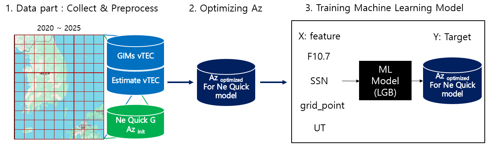
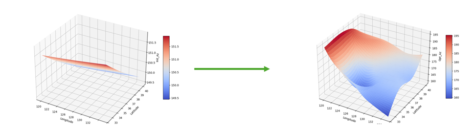
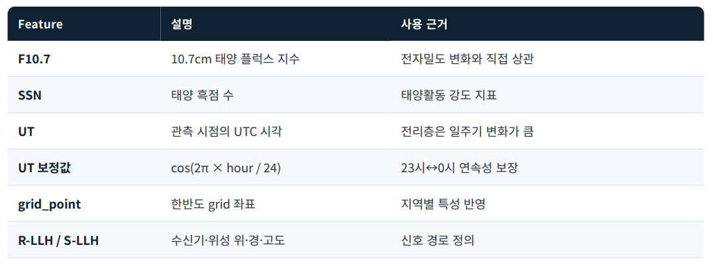
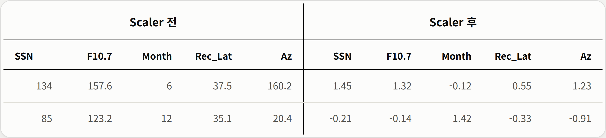
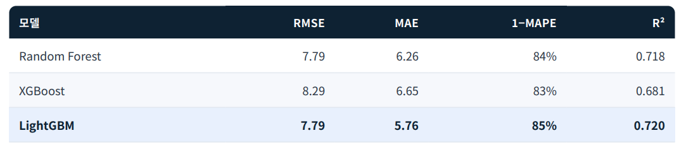
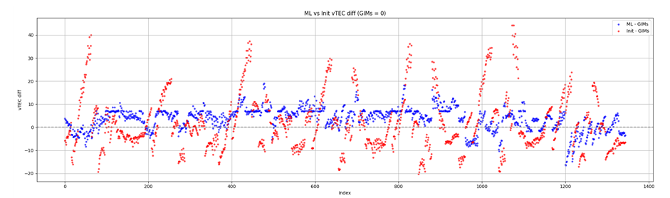
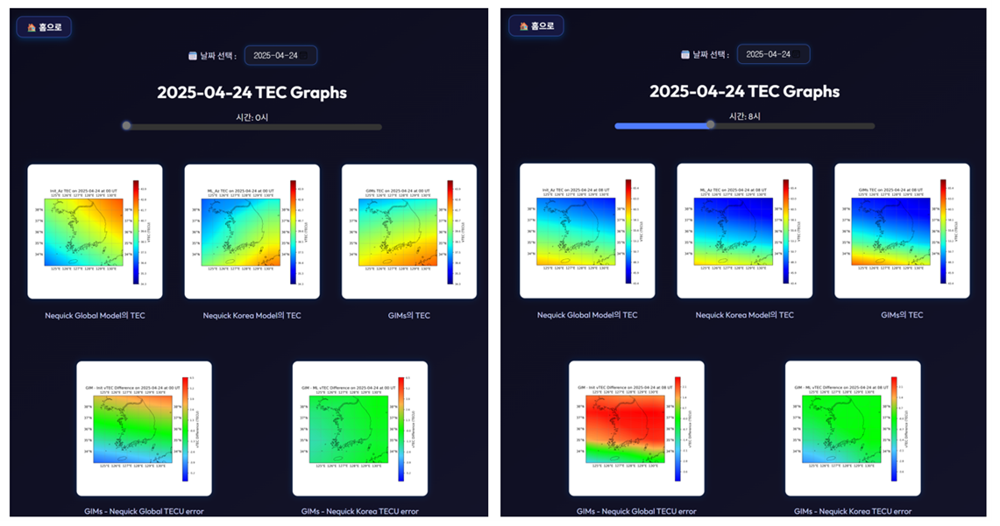
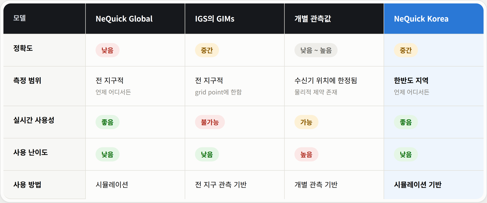

04 · Capstone Design · Machine Learning · GNSS
NeQuick Korea
머신러닝 기반 한국 지역 최적화 전리층 보정 모델. 태양활동 · 위치 · 시간 정보만으로 Az를 추론해 외산 위성 의존 없이 한반도 전역에서 실시간 전리층 보정을 수행합니다.
| 기간 | 16주 · 2025.03 — 2025.06 |
|---|---|
| 팀 | 항공우주공학부 학부생 5인 · '오늘의 우주날씨는' |
| 지도교수 | 방유진 교수님 |
| 역할 |
|
| Links | 실시간 시뮬레이션 인터페이스 ↗ |
왜 이 연구가 필요한가.
GPS 신호는 전리층(Ionosphere)을 통과하며 전자 밀도에 비례한 지연(Ionospheric Delay)이 발생합니다. 이 지연은 GNSS 측위 오차의 40~60%를 차지하는 가장 큰 오차 요인이며, 한국형 위성항법시스템(KPS)을 자립적으로 운영하려면 한국 지역 특성에 맞게 이 지연을 보정할 수 있는 모델이 반드시 필요합니다.
국제적으로 널리 쓰이는 보정 모델은 유럽 Galileo 위성이 방송하는 NeQuick Global 모델이지만, 한국과 같은 중위도 지역의 계절성·태양활동 영향을 충분히 반영하지 못한다는 한계가 보고되어 왔습니다.
기존 접근의 두 가지 본질적 제약
| 외산 위성 의존성 | Az를 산출하려면 결국 Galileo의 a₀, a₁, a₂ 파라미터를 받아야 함. KPS 자립이라는 목표와 정면 충돌. |
|---|---|
| 실시간성 부재 | 매번 당일 측정 데이터로 최적화를 다시 돌려야 했기에, 실시간 시뮬레이션이라기보다 사후 분석에 가까움. |
4단계 파이프라인.
- 데이터 수집·전처리 — 2020~2025년 한국 지역의 GIMs vTEC, Estimate vTEC, NeQuick G Az init 데이터 수집
- Az 최적화 — Nelder-Mead Simplex 알고리즘으로 실측 TEC에 가장 가까운 Az 값 역산
- ML 모델 학습 — F10.7, SSN, grid_point, UT를 feature로 LightGBM 학습
- 추론·시뮬레이션 — 학습된 모델이 추론한 Az를 NeQuick 엔진에 주입해 TEC 예측

Az 파라미터 최적화.
Az = a₀ + a₁·Modip + a₂·Modip². 처음에는 a₀, a₁, a₂ 세 파라미터를 모두 역산하려 했으나, 세 개의 독립적인 방정식을 정립하는 것 자체가 연구 범위를 벗어남.
subprocess로 호출.
subprocess.run결과 stdout의 VTEC 파싱이 깨지는 버그 — 정규식으로 보강exec_cmd컬럼의 기존 a₀, a₁, a₂ 값을 제거하고 최적화 Az를 주입하는 전처리 추가- nan 값과 공백 데이터로 인한 csv 포맷 오류 케이스 핸들링
- 최적화 코드와 NeQuick 재실행·결과 저장 코드를 하나의 파이프라인으로 병합해 I/O 오버헤드 제거

ML 기반 Az 예측 모델.
cos(2π × hour / 24)를 써서 23시↔0시 연속성 확보. F10.7·SSN 등 스케일 차이가 큰 feature는 StandardScaler로 표준화.

- 시계열·공간 연속성 반영 한계 — 트리 기반 독립 분기 구조라 grid_point·시간대 연속성 학습 안 됨
- 학습 데이터 부족 시 과적합 — 초기 단일 시점 학습에서 R² 0.252까지 하락

n_estimators / learning_rate / max_depth / num_leaves / subsample / reg_alpha·lambda 6개 파라미터 탐색 자동화. 동일 모델·동일 데이터에서 R² 0.720 → 0.837, RMSE 7.79 → 5.93 TECU.NeQuick Global 대비
정확도 큰 폭 개선.
테스트 구간: 2025.04.24 ~ 2025.04.30 (평균 SSN 133, F10.7 157 — 극대기 직후)
시계열 오차 (GIMs 기준)

실시간 시뮬레이션 인터페이스

모델 포지셔닝

NeQuick Korea는 Global의 실시간성과 GIMs의 정확도 사이를 메우는 위치에 자리 잡음. 한반도 지역에서 언제·어디서든 사용 가능하면서도 GIMs 수준의 정확도에 근접한 유일한 옵션.
한계와 배운 것.
| 단기 과적합 가능성 | 학습은 5년치(2020.01~2025.04.23)지만 테스트는 1주일만으로 검증. 태양활동 11년 주기의 일부만 본 셈이라 다음 주기 진입 시 성능 변화는 미검증. |
|---|---|
| 이중주파수 직접 검증 부재 | GIMs를 ground truth로 평가했으나 GIMs 자체도 grid point 보간값이라 완벽한 실측은 아님. 3D 포지셔닝 결과 또는 독립적 정량 비교가 추후 필요. |
| DCB 보정 적용 범위 | 멘토 피드백을 반영해 DCB(Differential Code Bias) 보정을 부분 적용했으나, 더 정밀한 그리드 기반 DCB 평가는 시간 제약상 완수하지 못함. |
RF → XGBoost → LightGBM 비교 과정에서 단순히 모델을 갈아끼우는 게 아니라 leaf-wise growth가 이 데이터의 어떤 특성에 잘 맞는지를 설명하려 노력했고, 그 과정에서 모델 선정의 사고방식이 바뀌었습니다.